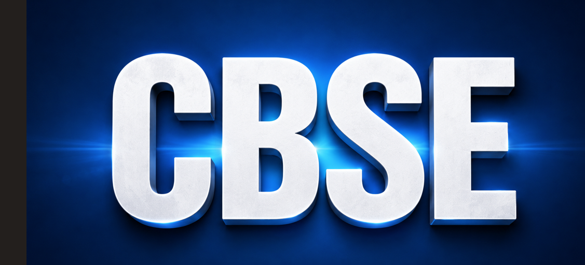

CBSE Advanced Level Mathematics and Science: Everything Students Need to Know
CBSE Advanced Level Mathematics and Science
CBSE Advanced Level Mathematics and Science: Everything Students Need to Know
Published by: Saraswat Academy

The Central Board of Secondary Education (CBSE) is planning to introduce Advanced Level courses in Mathematics and Science to provide students with an opportunity to study these subjects in greater depth. The initiative aims to help academically motivated students build stronger conceptual understanding, improve problem-solving skills, and prepare for higher education in science, technology, engineering, and mathematics (STEM) fields.
Unlike the regular curriculum, the Advanced Level programme focuses on analytical thinking, logical reasoning, practical applications, and real-world problem solving rather than rote memorisation. Students who enjoy Mathematics and Science and wish to explore these subjects beyond the standard syllabus may find this programme beneficial.
What is the CBSE Advanced Level Programme?
The Advanced Level programme is an optional learning pathway proposed by CBSE for students who want to study Mathematics and Science at a higher academic level. It is designed to challenge students through deeper concepts, application-based learning, and critical thinking while continuing within the CBSE education system.
Why is CBSE Introducing Advanced Level Courses?
Modern careers require students to think creatively, analyse problems, and apply knowledge effectively. To support these skills, CBSE plans to offer advanced courses that encourage conceptual learning instead of memorising facts. The initiative is also aligned with the vision of the National Education Policy (NEP) 2020, which promotes competency-based and flexible education.
Key Features
- Optional programme for interested students.
- Greater focus on conceptual understanding.
- Application-based learning and reasoning.
- Encourages scientific inquiry and mathematical thinking.
- Supports students interested in STEM careers.
- Helps build problem-solving and analytical skills.
Advanced Level vs Regular Curriculum
| Regular Curriculum | Advanced Level |
|---|---|
| Standard syllabus | Deeper understanding of concepts |
| Focus on textbook learning | Focus on application and reasoning |
| Suitable for all students | Designed for academically motivated learners |
| Moderate difficulty | Higher academic challenge |
| General problem-solving | Advanced analytical and logical thinking |
Who Should Choose Advanced Level?
The programme is suitable for students who enjoy solving challenging problems and have a strong interest in Mathematics or Science. It can be a good option for those planning careers in engineering, medicine, research, computer science, artificial intelligence, data science, or other STEM fields.
Benefits for Students
- Improves conceptual clarity.
- Develops logical and critical thinking.
- Builds confidence in solving complex problems.
- Strengthens preparation for higher studies.
- Encourages independent learning.
- Enhances scientific and mathematical skills.
Is the Advanced Level Compulsory?
No. The Advanced Level programme is expected to be optional. Students can continue with the regular CBSE curriculum if it better matches their interests, learning style, and future career plans.
Who Should Continue with the Regular Curriculum?
Students who plan to pursue careers in commerce, humanities, arts, law, or other non-STEM fields may find the standard curriculum more suitable. The regular CBSE syllabus continues to provide a strong academic foundation for a wide range of career opportunities.
Frequently Asked Questions (FAQs)
1. What is the CBSE Advanced Level Programme?
It is a proposed optional programme that allows students to study Mathematics and Science in greater depth with a stronger focus on conceptual understanding and problem-solving.
2. Is the programme compulsory?
No. Students are expected to have the choice between the regular and Advanced Level curriculum.
3. Which subjects are included?
The initial focus is on Mathematics and Science.
4. Who should opt for the Advanced Level?
Students who have a strong interest in STEM subjects and enjoy analytical learning may benefit the most.
5. Will it help in competitive examinations?
The stronger conceptual foundation and problem-solving approach can support preparation for various higher education entrance examinations.
Will Advanced Mathematics and Science Marks Be Added to the Main CBSE Result?
One of the most common questions among students and parents is whether the marks obtained in the CBSE Advanced Level Mathematics and Science examinations will be included in the final Class 9 or Class 10 result. According to the current CBSE proposal, the answer is No.
The marks scored in the Advanced Level examinations are not expected to be added to the student's overall percentage or aggregate marks. Students will continue to receive their regular CBSE board results based on the standard curriculum and examinations.
If a student successfully clears the Advanced Level examination by achieving the required qualifying marks, the achievement may be mentioned separately on the marksheet or academic record. This allows students to demonstrate higher subject proficiency without affecting their regular board examination scores.
Key Points
- The Advanced Level examination is an optional assessment.
- Advanced Level marks are not expected to be included in the overall CBSE board percentage.
- The regular Mathematics and Science examination marks will continue to determine the student's main result.
- Students who qualify in the Advanced Level examination may receive a separate recognition or remark on their marksheet.
- Choosing or not choosing the Advanced Level programme does not affect the regular CBSE board examination result.
Students should choose the Advanced Level programme based on their interest, academic ability, and future career goals rather than expecting additional marks in the final board result.
Conclusion
The proposed CBSE Advanced Level programme is an important step towards making school education more flexible and learner-centred. By offering students an opportunity to study Mathematics and Science in greater depth, the programme aims to develop critical thinking, analytical ability, and practical understanding. Students should choose the pathway that best matches their interests, academic strengths, and future career goals after discussing the options with their parents and teachers.
Download books for advance Mathematics and Science
MATHEMATICS AT ADVANCED LEVEL (OPTIONAL) GRADE 9 (2026-27)SCIENCE AT ADVANCED LEVEL (OPTIONAL) GRADE 9 (2026-27)
Last Updated: 27 July 2026